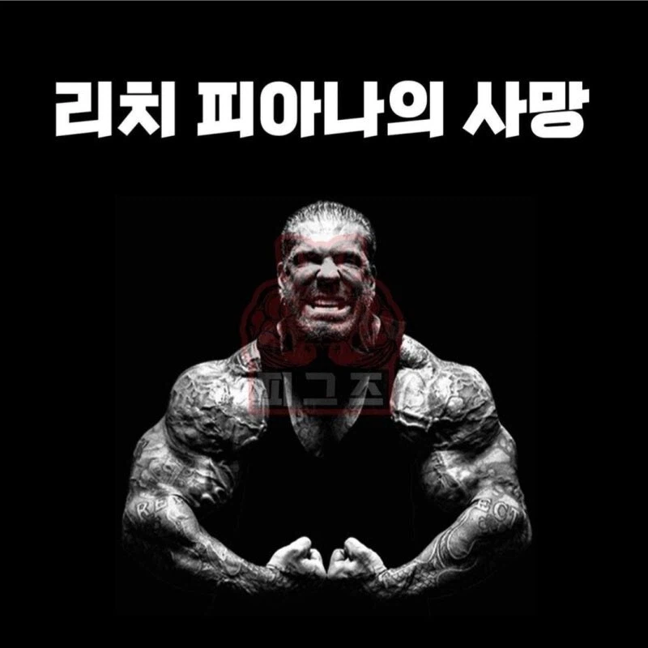
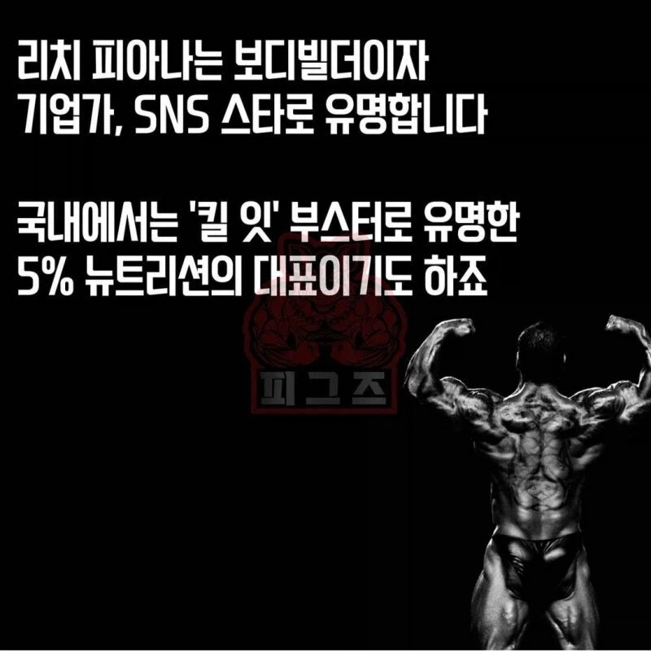
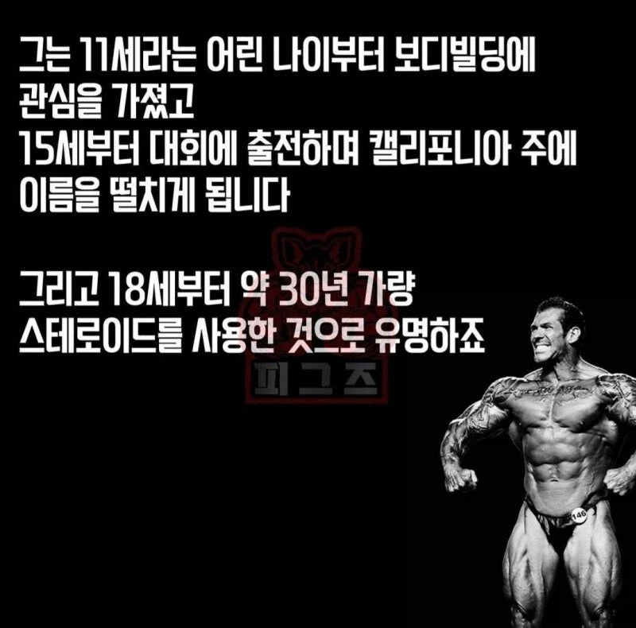
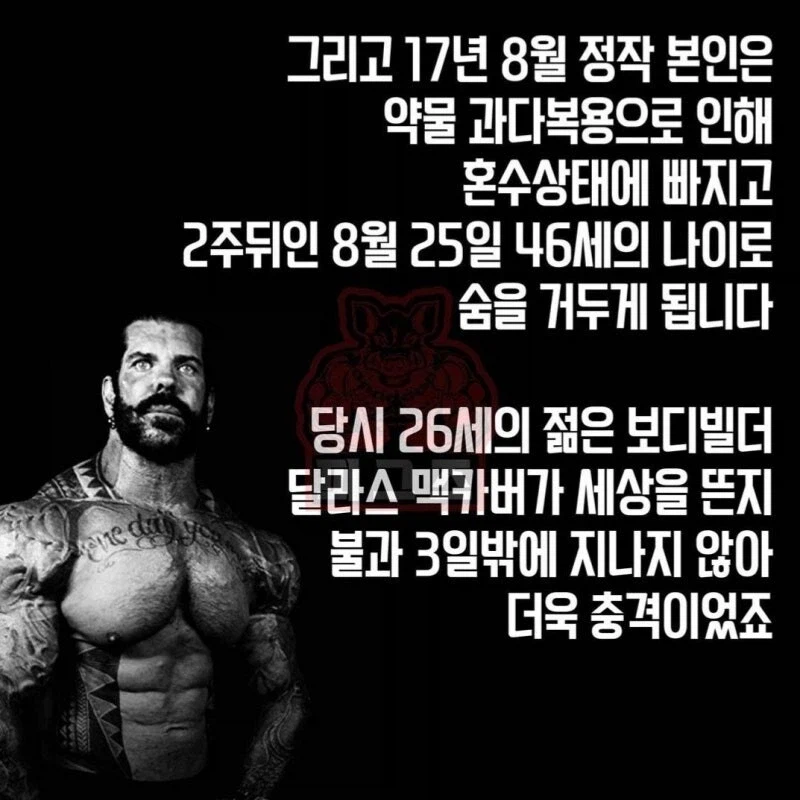
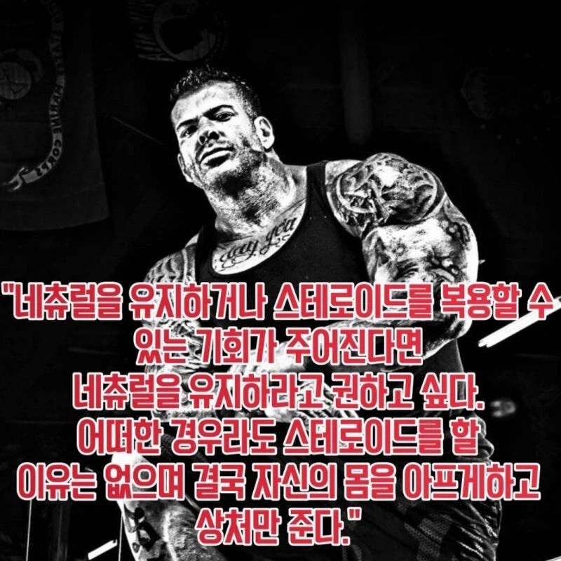
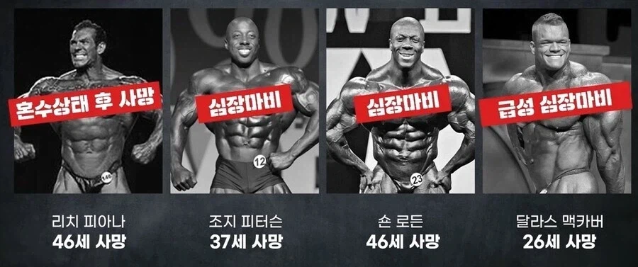

"어떠한 경우에도 멀쩡한 사람이 스테로이드를 사용할 이유는 없으며 사용하면 자신의 몸을 아프게하고 상처만 준다"
라고 이야기 하며 약물에 대해서 경고했지만 정작 자기는
"다른 보디빌더처럼 50살 전후에 죽어도 약을 끊을 수는 없다"
라면서 약 계속 하다가 결국 46세에 사망...






"어떠한 경우에도 멀쩡한 사람이 스테로이드를 사용할 이유는 없으며 사용하면 자신의 몸을 아프게하고 상처만 준다"
라고 이야기 하며 약물에 대해서 경고했지만 정작 자기는
"다른 보디빌더처럼 50살 전후에 죽어도 약을 끊을 수는 없다"
라면서 약 계속 하다가 결국 46세에 사망...
스테로이드 맞으면 심장 근육도 커져서
숨만 쉬어도 협심증으로 사망할수 있음
약물이 근육을 키워주는 약이자너
심장도 엄청 큰 근육인데 심장도 덩달아 비대해지면 저렇게 가는겨...
실험해보니 네추럴로 운동한 사람보다, 약물로 뒹굴거리는 사람 근육량이 더 많이 늘었다 함.
테스토스테론 없이 웨이트 트레이닝을 한 사람들은 2.3kg의 근육이 증가했습니다. 운동도 하지 않고 테스토스테론도 투여하지 않은 사람들은 근육이 전혀 증가하지 않았습니다. 테스토스테론을 투여한 후, 운동을 하지 않은 그룹은 3.6kg의 근육이 증가했고, 운동을 한 그룹은 6kg의 근육이 증가했습니다. 즉, 운동 없이 테스토스테론 600mg을 투여한 사람들이 테스토스테론 없이 웨이트 트레이닝을 한 사람들보다 더 많은 근육을 얻었습니다.
스테로이드는 좀 과장하자면 숨만 쉬어도 근육이 증가함
근데 사람몸에서 제일 쉴새없이 운동하는게 심장근육임
말그대로 숨만 쉬어도 심근이 비대해져서 무리가 가는거지
이해가 쏙 되네
주사하는 것 자체만으로 이미 50세에 죽을 위험도를 증가시키는거고
꾸준히 복용하면 확정시키는 거
이걸 이겨낼려면 의사를 끼고 케미컬 커스터마이징 해야되는데 이게 가능한 사람은 헐리우드 대스타 정도 되는 돈을 버는 사람만 가능함
어중간하면 죄다 저꼴나는거임
거기다 스테로이드를 잘못하면 가장 많이 발생하는게
로이드레이지
대표적으로 황철순
TRT 정도만 하고 살면 사실 건강에 영향이 없다는 연구들이 있어서 남성 호르몬 수치 내추럴 맥시멈 값 유지하면 체지방 잘 안 쌓이고 근육 잘 붙는 체질 되는데
이게 보디빌더들은 기본적으로 신체이형장애를 가진 사람들이라 땍 만족할만한 선에서 못 끝냄
대충 내추럴 남성 호르몬 값이 100이라 하면 리치 피아나 같은 양반응 2000씩 때려 박고 거기다 다른 약물들까지 아무리 못해도 비슷한 양 때려박았을 거임
(TRT도 하는 동안은 정자 수 줄어서 불임 상태로 지내긴 해야 됨)
정관수술 할바엔 TRT를?
진지하게 애 다 낳고 느지막히 40 중후반부터 TRT 하는 거 ㅊㅊ
옛날엔 TRT도 결국엔 안 좋다는 연구들 있었는데 요근래 논문들 나오는 거 보면 오히려 더 중노년에는 건강에 더 좋다는 게 중론임.
스테로이드 기전에 대한 이해가 전혀 없어서 그런 생각하는거. 행복한 뚱땡이로 살다가 40대에 요절하는거임.
'아닌데? 재 주변에서는 스테로이드 맞고도 건강하게 잘 사는데?'
후.... 니들은 이런거 하지마라
이미 버린 몸이라고 판단했겠지. 여기서 끊어봐야 건강이 크게 회복되진 않는데 근육을 잃고, 그로 인해 사업까지 위태로울테니까. 현명한 선택은 아니겠지만 이해는 가네.
로이드 끊으면 테스토스테론 자체생산이 불가다보니
그냥 자기 인생이었던 큰 근육도 빠지고 정신,호르몬 문제도 생겨서 포기 못하나보더라.
약투하던 박승현도 계속 약 끊으려했다가 다시 맞고 결국 떠난거 봐도
어찌보면 마약같은거네
케어 잘하면 딱히 그렇지도않음
케어 잘 할 정신머리 가진 사람은 약 하지도 않어... 스테로이드 꼽는 애들 보면 하나같이 한구석씩은 정신이 나가 있더라.
모든 로이더가 그렇지는 않다는거임
다들 이 생각하면서 쳐 맞고 뒤지는거에요
행실을 떠나 항상 젊은 사람이 그렇게 세상을 떠나면 뭔가 안타깝더라
흡연충, 약물충
하여튼 이 둘 새끼들은 꺼드럭이 뇌를 지배했다니깐
넌 비흡연자야??
ㅇㅇ
아니 숀 로든 죽은건 몰랐네
걱정마셈 한국에는 공룔유전자가 존나 많아서 약물을 안함 ㅋㅋㅋ
공룡들이 다살아남았으니 시발 석유가 없지
저걸로 밥 벌어 먹던 사람이니 아예 다른길로 가는거 아니면 포기 못할거임
보통은 20~30대 자랑할때 그렇게 하는데 말이야
리치피아나는 인슐린으로 저혈당일꺼같음
사망전에도 저혈당으로 맛이 반쯤 가서 사탕 찾으며 횡설수설하는 모습 보인적이 있어서
그냥 저것도 외모정병 그 이상도 이하도 아닌거 같음
심장이 수면중에도 열심히 뛰는데 스테로이드하면 점점 커지는듯
약간 그런 게 여자친구가 죽어라 죽어라 기도하는 수준이었음
인슐린 맞고 저혈당 와서 숨 꼴딱꼴딱하는데 안 도와주고 있는 거 동료들이 발견해서 응급조치한 일화도 유명해서 사인도 인슐린이 스테로이드 부작용에다 막타 친 거 아니냐는 소리가 돌았음
터미네이터 주지사 형처럼 돈 많이 버는 사람도 심장 때문에 훅 갈뻔 했는데 저게 단순히 잘 관리한다고 해서 해결될 일이 아니긴 한듯요
그형도 로이더거든 ㅋㅋㅋ 로이드는 심장병 확률 업임
나중엔 심장만 빼고 근육 붙는 새로운 스테로이드 나올라나
킬잇 많이묵엇지
스택의 가장큰 특징중 하나는 우리의 의지대로 움직임을 조절할수 없는 불수의근 ( 심장근육,내장근육등)의 근섬유도 비대하게 만들게됨.
그래서 가끔 팔룸보이즘이라고 복부의 메스도 선명한대 이상하리만치 배가 불룩해지는 현상이 나타나는 경우가 생기는거임.
호르몬 불균형은 둘째치고... 대부분 스택의 가장큰 문제는 이러한 불수의근의 발달-비대화는 비가역적 변화임. 물론 나이먹고 운동안하고 그러면 점점 부피는 빠지겠지만 인체의 항상성유지에 가장 이상적인 형태에서 변형된 불수의근이 신체에 주는 악영향은...
알약타입 경구제 스택도 두세달만 꾸준히 먹고 끊어도 일년넘게 체지방 쫙쫙 빠지고 벌크업이 확연히 달라지는대, 주사타입 스택은 일반인은 보지도 말아라.
되돌릴수가 없다.
같은 불수의근인데 쥬지는 왜....... ㅋㅋㅋㅋㅋ
선생님 그건 쥬지가 일반적인 근섬유보다는 해면체 비중이 훨씬 큰 기관이기 때문입니다
아니 그건 알아요....그냥 드립인데 ㅠㅠㅠㅠ 실패했다....
심장근성장만 막으면 기적의 약물이긴하네..
조만간 부작용 적은 펩타이드가 주류가 되고 스테로이드는 잘 사용 안할거 같음
네추럴 공룡유전자들 나오는거 보니 멀지 않았다
스테로이드도 은근 중독성이 심하다함 강한 남성성과 초인같은 힘을 약 끊자마자 잃게되니까 허탈감이 심해서 다시 꽂는 사람이 많다더라
돈과 유명세를 갖고 40대에 사망하면.. 삶에 무엇이 남아있을까. 죽으면 모든게 다 소용 없더라고.
"약물 과다복용으로 인해"에서 약물이 스테로이드야 아니면 마약이야
오래 버텼네 그래도
약물 문제가 아니라 몸을 저렇게 혹사시켜서 일찍 가는거 아닌가?
스테로이드 맞고 행복한 뚱땡이로 살면 결과가 어떻게 될지 궁금하네